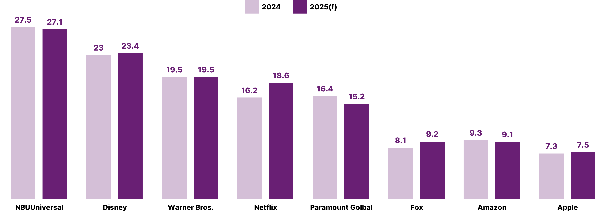
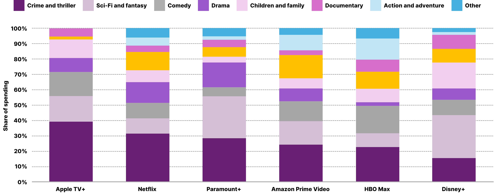

이른바 ‘글로벌 콘텐츠 제작비’를 놓고 말도 많고 탈도 많지만, 비용만큼 퀄리티를 담보할 만한 정직한 지표가 없다. 완성도를 따질 가치조차 없는 조악한 영상의 등장 가능성을 줄여주고 ‘작품’으로서 인정받을 수 있도록 돕기 때문이다.
[그림 1] 2024, 2025년 전 세계 스트리밍 회사의 콘텐츠 지출(단위: 십억 달러)
(출처: Statista)
전 세계 주요 미디어·스트리밍 기업들은 2024년에 이어 2025년에도 콘텐츠에 막대한 돈을 투자할 모양새다(그림 1). 가장 눈에 띄는 기업은 전통적인 미국 방송 네트워크인 NBC유니버설이다. 이들은 2025년 27.5억 달러(약 4조 원)를 투자할 계획으로, 전년 대비 4억 달러 줄었지만, 그 규모는 여전히 최상위에 있다. 한편, 콘텐츠 지출액에서 가장 큰 증가 폭을 보인 건 넷플릭스다. 넷플릭스는 2024년 162억 달러(약 23조 7천억 원)를 투입했으며, 2025년에는 2021년 175억원에 이어 역대 최대치인 180억 달러(약 25조 6천억 원) 지출을 예상하고 나섰다(Maglio, T., 2025. 2. 19). 미국 프로레슬링 단체인 월드레슬링엔터테인먼트(WWE)가 제작한 레슬링 TV 프로그램 <Monday Night RAW>¹⁾, <오징어 게임> 시즌 3, <기묘한 이야기> 시즌 5와 같은 ‘대작’ 모두 2025년 넷플릭스에서 공개된다는 사실만 봐도 넷플릭스의 폭넓은 구독자 유인 전략은 새삼스러울 게 없다.
[그림 2]
WWE의 는 ‘스포츠’가 아닌 ‘드라마’다.
(출처: Netflix)
디즈니, 폭스, 애플, 역시 2025년 영상 콘텐츠에 큰 비용을 지출할 예정이다.²⁾ 넷플릭스에 이어 두 번째로 증가폭이 큰 폭스는 2025년 전년 대비 13.6% 늘어난 9.1억 달러(약 1조 원)의 지출을 예상했다. 폭스의 결정 뒤에는 2023년 제57회 슈퍼볼 중계 성과가 숨어있다. 해당 경기는 1억 1,300만 명에 가까운 시청자를 끌어모았는데 당시만 해도 이는 미국 내 TV 시청자 수 기준 역대 3위에 해당하는 기록이었다. 이뿐만 아니다. 폭스의 광고 기반 무료 스트리밍 서비스 투비(Tubi)는 해당 슈퍼볼 경기 중 광고 판매로 700만 달러의 기록적인 수익을 올렸다. 단 30초의 광고 슬롯만으로 거둔 수익이다.
최근 글로벌 TV 제작자들은 스포츠 중계에 더해 범죄수사물, 리얼리티 쇼에 역량을 집중하고 있다. 이들 장르가 공유하는 키워드는 단연 ‘투자 효율’이다. 수요가 불확실한 시장에서 새로움만을 추구하긴 어렵다. 그를 고민할 여유가 없는 이들에게 이미 정해진 포맷의 장르는 축복과도 같다. 글로벌 미디어·스트리밍 업계가 모험과 동시에 ‘관습’을 반복하는 이유다.
전술했듯 스포츠 중계에 대한 업계의 애정은 남다르다. 넷플릭스의 WWE 방영권 획득 사례만 봐도 그렇다. 격투는 더 이상 피바람 부는 사각의 정글이 아니다. 각본에 따라 진행되는 스토리텔링 기반의 엔터테인먼트다. 넷플릭스뿐만 아니라 디즈니의 스포츠 전문 채널 ESPN도 2024~2032년까지 NCAA 챔피언십 중계권을 계약했다. 규모는 총 9억 2천만 달러(약 1조 3000억 원)로 연간 1억 1,500만 달러(약 2,132억 원)에 달한다. 인도 시장에서 각광받는 스트리밍 플랫폼 디즈니+핫스타의 경우 2023년 ICC 남자 크리켓 월드컵 결승전에서 5,900만 명의 동시 시청자를 기록했다. 당시 모바일 앱 사용자에게는 ‘무료 시청 전략’을 펼쳤는데 이때 유입된 광범위한 시청자 데이터는 유료 가입자 확보 전략에 반영됐다. 디즈니, 워너브라더스디스커버리(WBD), 폭스가 스포츠 스트리밍 합작사를 설립하려던 계획은 2025년 1월 철회됐지만, 각각 자체 스트리밍 서비스인 ESPN플래그십(2025 가을 출시 예정), 맥스(MAX), 투비를 통해 스포츠 콘텐츠에 대한 투자를 이어가고 있다. 전통적인 케이블 방송 점유율이 쇠락의 길로 들어선 지점에서 글로벌 OTT 스포츠 스트리밍 시장은 2027년까지 226억 달러(약 32조 원)의 비약적인 성장세가 예상된다(Brockhaus, B., 2023. 12. 11).
범죄수사물은 어떨까? 전 세계 SVOD 콘텐츠 지출에서 ‘범죄/스릴러’는 1위를 차지했다(그림 3). 애플TV+의 경우 범죄수사물 비중은 1위에 올랐고, 2023년 상반기 플랫폼 예산의 최대 점유율(40%)을 차지했다. 2003년부터 미국 CBS 채널에서 방영 중인 <NCIS>는 굴지의 범죄수사물답게 수백만의 시청자를 확보한 지 오래다. 2024년 2월에 공개된 시즌 21의 경우 평균 800만~1,000만 명의 시청자를 확보했으며, 방송 TV에서 가장 많이 시청된 스크립트 쇼 중 하나로 자리 잡았다. CBS의 모회사인 파라마운트글로벌은 고전 히트작의 라이선스를 자사 플랫폼에만 묶어두지 않고 파라마운트+, 넷플릭스, 훌루 등 여러 플랫폼에 판매해 더 많은 사람들을 유인했다. 그 덕분에 <NCIS>는 모든 플랫폼을 통틀어 200주 동안 136.5억 분의 시청 시간을 기록했다. 이는 시청자들이 약 26만 년 동안 미 해군 범죄 수사국 특수요원이 악당을 추적하는 모습을 기꺼이 지켜봤다는 뜻이다(Porter, R., 2023. 9. 2). 이렇게 거둔 수익의 일부는 곧 공개될 <NCSI: 토니&지바>와 같이, 파라마운트+에 독점 공개되는 새 프랜차이즈 제작에 투자된다(Adalian, J. 2025. 3. 6). 이렇듯 범죄수사물은 내 손안의 스마트폰, 내 방 안의 텔레비전이라는 안전한 환경에서 인간 본성의 어두운 면을 탐닉할 기회를 제공하고 있다.
[그림 3] 2023년 상반기 SVOD 콘텐츠의 장르별 지출 분포
(출처: Statista)
[그림 4]
2025년 파라마운트+에서 <NCSI: 토니&지바>가 독점 공개된다.
(출처: Paramount+)
리얼리티 쇼는 TV와 OTT를 막론하고 큰 인기를 얻고 있다. 미국의 경우 2024년 2분기 전체 TV 프로그램의 약 1/5에 해당하는 19.8%가 리얼리티 시리즈로 채워졌다. 여기에는 부동산, 유명인, 라이프스타일을 포함한 여러 하위 장르가 속해있다(Parrot Analytics, 2024. 11. 11). 2017년에 출범해 1억 명 이상의 마라티어 사용자들을 대상으로 성장해 온 인도 OTT 플랫폼 플래닛 마라티(Planet Marathi)에서도 리얼리티 쇼가 주력 장르다(Lal, N. 2022. 11. 19). 스탠드업 코미디, 댄스 리얼리티 쇼, 음악 경연 쇼, 영화 베테랑 배우들이 출연하는 채팅 쇼, 현지 농부의 활동을 보여주는 리얼리티 쇼 등 다양한 세부 장르를 통해 인도 서부 마하라슈트라주의 남녀노소 지역 시청자들과 상호작용하고 있다(Kulkarni, S., 2024. 1. 4).
앞선 장르들과는 달리 역사물에 대한 관심은 상대적으로 낮은 편이다. 2013년에 시작된 미국 히스토리(HISTORY) 채널 시대극 드라마 <바이킹스(Vikings)>, 2014년 케이블 텔레비전 스타즈(Starz)에서 방영을 시작한 시리즈 <아웃랜더(Outlander)>와 같은 역사 드라마는 각각 시즌 초반에 360만 명, 140만 명의 시청자를 기록(Patten, D. 2016. 4. 12)했으나, 이는 최근 시즌 시청 실적의 적게는 3배, 많게는 8개 가까이 낮은 수치다. 역사물은 타 장르에 비해 장기간에 걸친 서사 구축이 요구되지만, 제작비 회수를 담보하긴 어렵다는 점에서 제작자들을 주저하게 만든다. 물론 단편적이고 즉각적인 콘텐츠를 선호하는 시청자의 취향 변화와도 쌍방향성이 맞물린 결과다.
그럼에도 불구하고 역사물 제작은 여전히 진행 중이다. 2024년 애플TV+에서는 <더 뉴 룩(The New Look)>을 선보였고, 2025년 4월 말에는 <카렘(Carême)>이 공개된다. <카렘>은 나폴레옹 통치 기간 중 권력 게임에 휘말려 최초의 유명 셰프가 된 안토닌 카르메의 급부상 과정을 추적한다. 앞서 언급한 <바이킹스>, <아웃랜더> 그리고 최신작인 <더 뉴 룩>, <카렘> 모두 실화를 바탕으로 한 역사물이지만, 내러티브 면에서는 각기 다른 노선을 취한다. <바이킹스>가 생존을 근간으로 한 남성적 서사물이라면, <아웃랜더>는 로맨스와 판타지를 엮은 타임슬립극이다. <더 뉴 룩>으로 넘어오게 되면 전투나 로맨스보다는 전후 프랑스 사회에서 패션이라는 영감이 인간의 상처를 어떻게 치유했는지를 다룬다. <카렘>의 경우 인류 공통의 관심사인 음식을 매개로 계급의 문제를 그려낸다. 남성적 영역의 소중함, 공적 영역의 중요성을 설파하는 관습화된 역사물을 넘어 현대물과 역사물을 뒤섞은 퓨전 역사물로의 변화다. 제작비가 여타 콘텐츠의 수십 배에 달하지만, 애호가를 근간으로 특정 사회/문화권에 대한 깊이 있는 탐구를 가능케 한다는 점에서 역사극은 마치 틈새시장과도 같다.
지속 가능한 역사물을 위한 대안의 실마리는 바로 국가/플랫폼 간 공동제작(co-production)이다. 일례로 넷플릭스 오리지널 역사물이자 넷플릭스 역사상 ‘가장 비싼 드라마’³⁾ 중 하나로 알려진 <더 크라운(The Crown)>(2016~)은 영국 독립제작사 레프트뱅크픽처스(Left Bank Pictures)와 미국 소니픽처스텔레비전(Sony Pictures Pictures Television)이 공동 제작했다. 주요 배급은 넷플릭스가 맡았지만, 소니픽처스텔레비전이 DVD/블루레이 유통을 전담해 부가시장을 확보했다. 영국에서 촬영된 만큼 영국 정부의 영화 및 TV 제작 세액공제(Film and TV Tax Relief) 혜택도 받았다. 통상 글로벌 스트리밍 권리를 7~15년 독점 소유하는 넷플릭스의 관행으로 미루어볼 때 장기 스트리밍 권리를 제외한 IP 소유는 레프트뱅크픽처스, 소니픽처스텔레비전에 있다(Reid, C. 2023. 1. 28). 이들은 넷플릭스와의 계약이 만료되면 타 플랫폼이나 DVD, TV 재방송 등에 콘텐츠를 재배급할 수 있는 권리를 보유했다. 혼자 힘으로는 감당할 수 없는, 방대한 작업량을 요구하는 역사물의 구상에 있어 이를 함께할 파트너를 찾는 것은 역사물 제작을 지속가능케 하는 현실적인 방법이다. 자금 조달의 어려움을 덜어내고, 완성된 콘텐츠의 저작권과 수익을 공유할 뿐만 아니라 다양한 문화권의 시청자에게 어필함으로써 글로벌 시장 진출을 용이하게 한다는 이상적인 지향이 성립한다면 말이다.
[그림 5] 애플TV+ 역사물 시리즈 <더 뉴 룩>(2024)과 <카렘>(2025) (출처: Apple TV+)
- Adalian, J. (2025. 3. 6). NCIS (Still) Cannot Be Denied. <Vulture>.
- Brockhaus, B. (2023. 12. 11). From the Roman Colosseum to Over-the-top (OTT) Streaming: The Evolution of Watching Sports and Fan Engagement. <DataSkrive>.
- Kulkarni, S. (2024. 1. 4). On the rise: Reality shows on OTT. <Insights>.
- Lal, N. (2022. 11. 19). Authentic & impactful: True crime shows a hit on OTT. <Times Entertainment>.
- Maglio, T. (2025. 2. 19). Here’s How Much Everyone Will Spend on Content in 2025. <IndieWire>.
- Patten, D. (2016. 4. 12). ‘Outlander’ Ratings Hit Starz Debut High In Return; ‘Girlfriend Experience’ Opens Strong. <DEADLINE>.
- Parrot Analytics (2024. 11. 11). Streaming Economics: United States TV & Streaming Landscape: Key Audience Trends and Consumer Insights for Major Platforms.
- Porter, R. (2023. 9. 2). Why Three Shows Always Dominate the Streaming Charts, Even Amid Peak TV. <The Hollywood Reporter>.
- Reid, C. (2023. 1. 28). Sony Spends A Record $140 Million On The Crown. <Forbes>.
- ¹⁾ 1993년에 탄생한 프로레슬링 정기 프로그램이다. 2023년 WWE는 UFC를 소유한 엔데버(Endeavor) 그룹과 합병해 새로운 상장기업인 TKO 그룹 홀딩스로 탄생했다. 넷플릭스는 TKO로부터 약 7조원에 달하는 대형 상품인 WWE 방영권을 구매했고, 2025년 1월부터 넷플릭스를 통해 미국, 캐나다, 영국, 남미, 라틴아메리카에 독점 제공되고 있다.
- ²⁾ 애플 역시 2025년 콘텐츠에 7.5억 달러를 지출할 예정으로 전년 대비 예산을 소폭 늘렸다. 증가분 3%는 애플필름즈, 애플tv+ 시리즈, 기타 콘텐츠를 종합한 것이다. 그럼에도 불구하고 애플과 아마존은 콘텐츠에 투자에 가장 인색하다. 금액 자체가 적다기보다는 콘텐츠 게임에 적극적으로 뛰어들지 않는다고 봐야 옳다.
- ³⁾ 60개 에피소드로 총 제작비는 7억 8천만 달러(약 1조 1,140억원), 회당 제작비는 1,300만 달러(186억 원)이다.